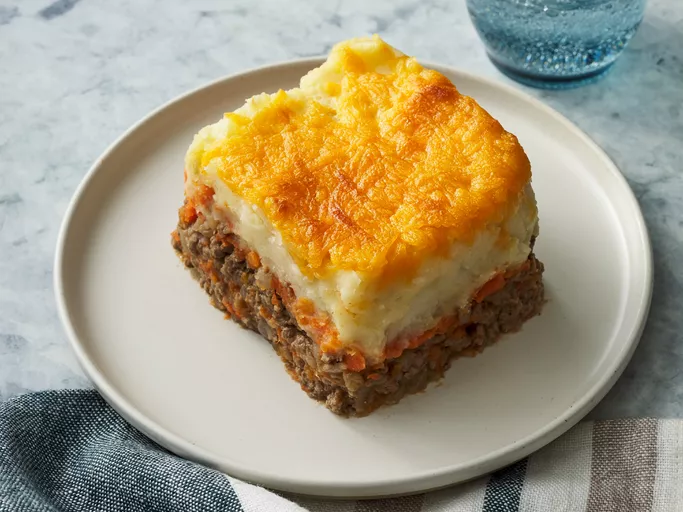

<!DOCTYPE html>
<html lang="eng">
    <head>
        <meta charset="utf-8">
        <title>Shepherd's Pie</title>
    </head>
</html>

<body>
    <h1>Shepherd's Pie</h1>
     
    <h2>Description</h2>
    <p>The internet seems to always meme on Britain for having plain boring food. This... is still simple but it's GOOD. 
        It's just a meat pie with veggies and potatos. Very simple to make, which makes it a great choice for an easy hot meal during the winter. 
    </p>

    <h2>Ingredients</h2>
    <ul>
        <li>4 large potatoes, peeled and cubed</li>
        <li>1 tablespoon butter</li>
        <li>1 tablespoon finely chopped onion</li>
        <li>¼ cup shredded Cheddar cheese</li>
        <li>salt and pepper to taste</li>
        <li>5 carrots, chopped</li>
        <li>1 onion, chopped</li>
        <li>1 pound lean ground beef</li>
        <li>2 tablespoons all-purpose flour</li>
        <li>1 tablespoon ketchup</li>
        <li>¾ cup beef broth</li>
        <li>¼ cup shredded Cheddar cheese</li>
    </ul>

    <h2>Steps</h2>
    <ol>
        <li>Bring a large pot of salted water to a boil. Add potatoes and cook until tender but still firm, about 15 minutes. Drain and mash. Mix in butter, finely chopped onion and 1/4 cup shredded cheese. Season with salt and pepper to taste; set aside.</li>
        <li>Bring a large pot of salted water to a boil. Add carrots and cook until tender but still firm, about 15 minutes. Drain, mash and set aside. Preheat oven to 375 degrees F (190 degrees C.)</li>
        <li>Heat oil in a large frying pan. Add onion and cook until clear. Add ground beef and cook until well browned. Pour off excess fat, then stir in flour and cook 1 minute. Add ketchup and beef broth. Bring to a boil, reduce heat and simmer for 5 minutes.</li>
        <li>Spread the ground beef in an even layer on the bottom of a 2 quart casserole dish. Next, spread a layer of mashed carrots. Top with the mashed potato mixture and sprinkle with remaining shredded cheese.</li>
        <li>Bake in the preheated oven for 20 minutes, or until golden brown. Serve hot and enjoy!</li>
    </ol>
</body>